UNIDAD III
INCORPORANDO TECNOLOGÍAS DE SERVIDOR WEB
Para este cómputo nos fuimos un poco mas lejos, claro es subjetivo decir eso, yo lo digo por mí, aprendimos sobre
Node.JS un concepto que vino a revolucionar mi manera de pensar la programación, ya que este marco de trabajo se utiliza
para desarrollar aplicaciones basadas en servidor.
En principio fue muy complejo el lograr comprender algunas definiciones y hay otras tantas que aún no termino de captar
y es porque son temas relativamente avanzados para el nivel en el que me encuentro.
Aprendí sobre la capacidad que tiene Node.js para incorporar funcionalidades, mediante módulos de terceros, que realmente facilitan
y ayudan a poder realizar procesos de una manera más rapida y elegante.
Aprendí sobre la librería Axios la cual me permite realizar peticiones HTTP, es una librería muy práctica y
considero que sencilla de utilizar.
También hicimos la instalación del modulo de MongoDB con el cual
realizamos la administración de documentos de una manera práctica y eficiente.
Este cómputo estuvo lleno de tantas sorpresas bonitas, también aprendimos sobre el framework express, trae consigo
un conjunto de funcionalidades, que por supuesto siempre estan enfocadas en la eficiencia y productividad del programador.
Para finalizar estuvimos aprendiendo sobre los websockets que nos permiten una comunicación bidireccional entre cliente y servidor,
sobre un único socket. Esto sin duda volvió a darle un vuelco a mi manera de ver el entorno de la programación y el como funciona internamente.
Realizar la práctica de crear un chat usando la biblioteca socket.IO estuvo espectacular, me hizo tener finalmente una idea de como
funcionan todos esos chats de mesnsajería instantánea. ¡Qué ganas de hacer el próximo telegram de la decada!
Sin duda hacer uso de las herramientas que ya existen puede agilizar el desarrollo y ahorrar tiempo, sin embargo aprender
su trasfondo no dejara de ser siempre esencial e importante.
EVIDENCIA DE ENTREGAS
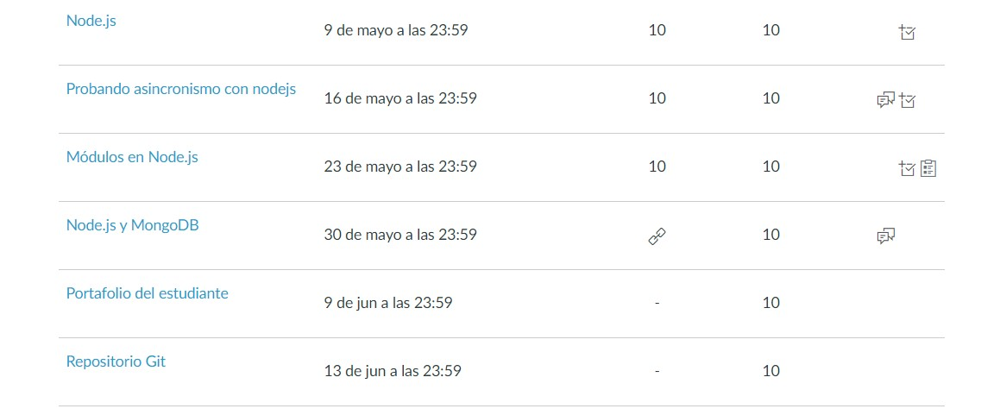
**El portafolio es el presente y la tarea que dice Repositorio Git, será el espacio a usar para la entrega del parcial.
TAREAS Y PRACTICAS
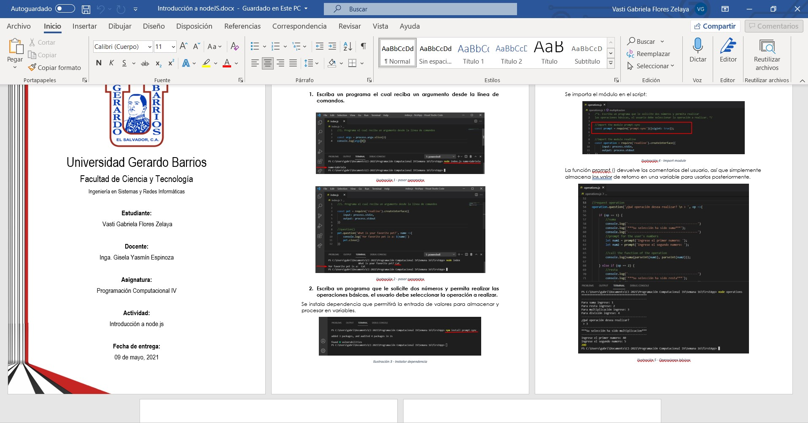
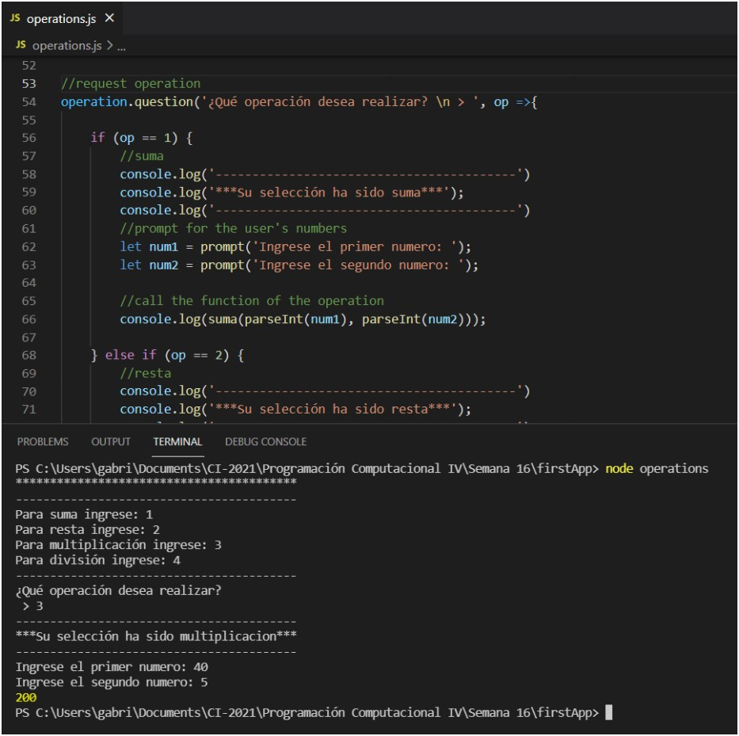
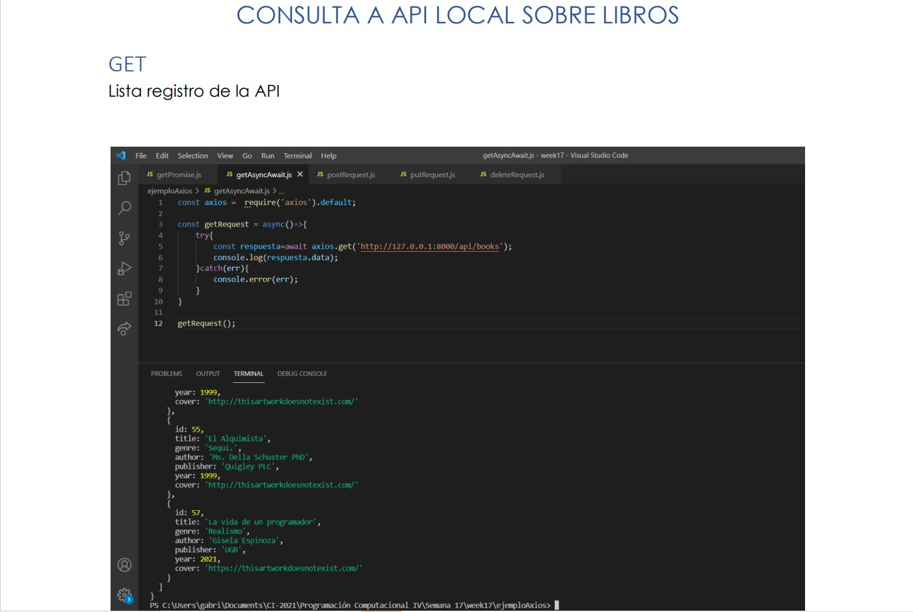
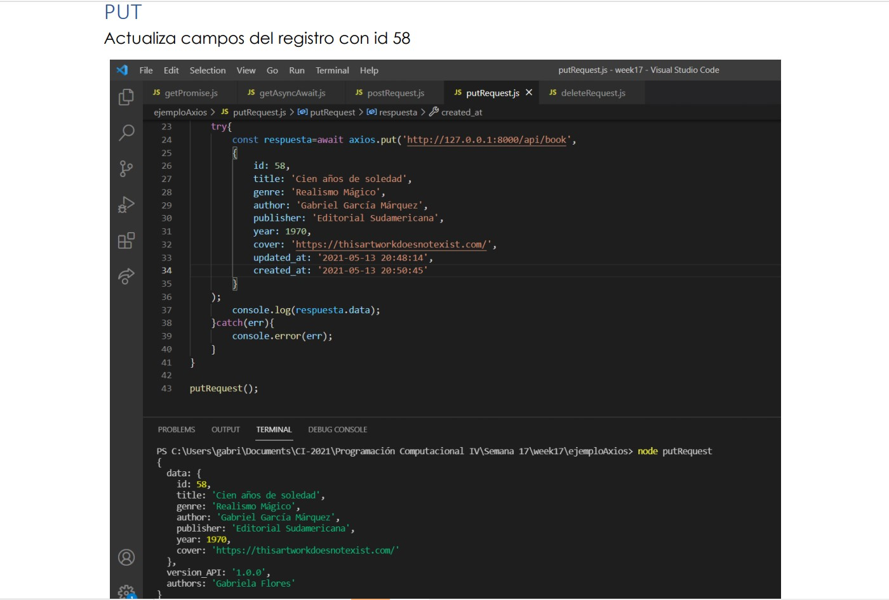
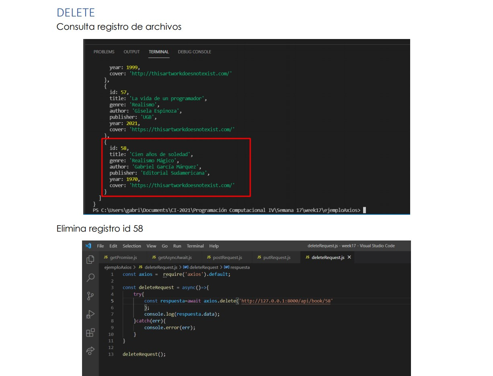
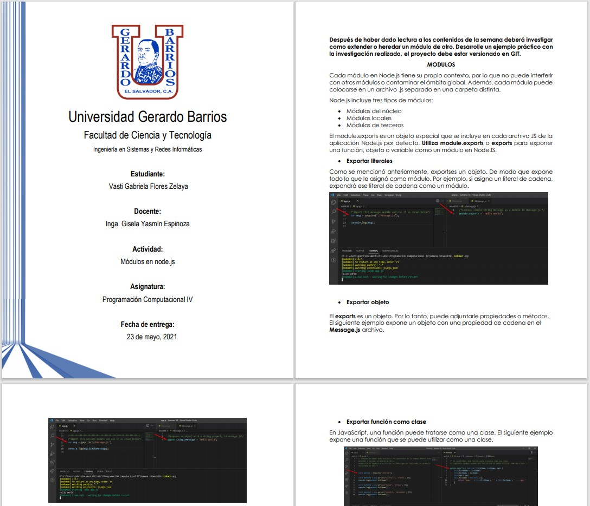
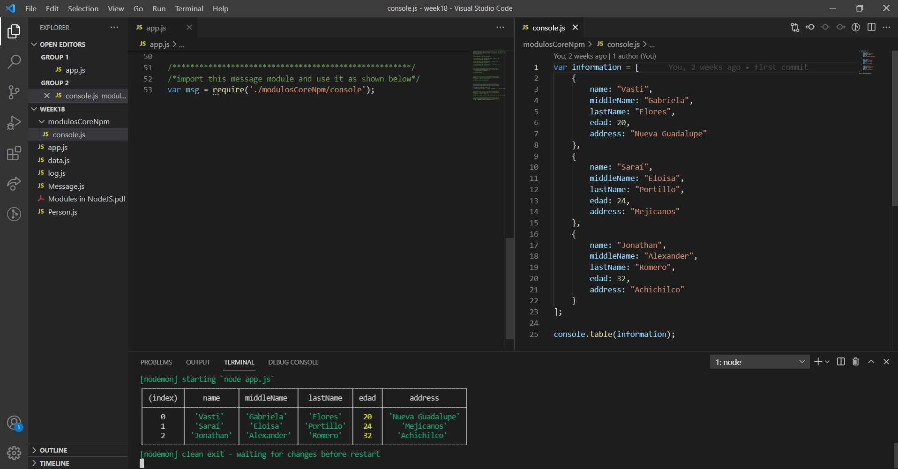
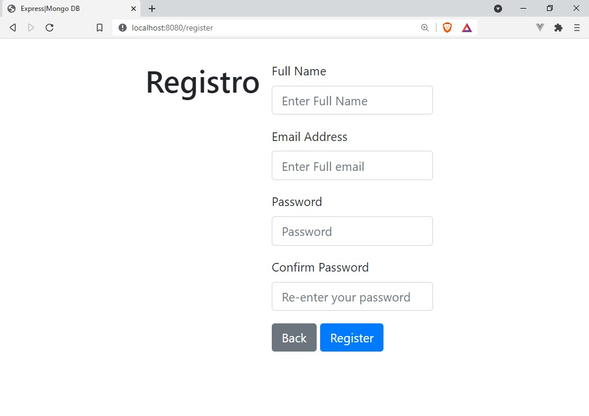
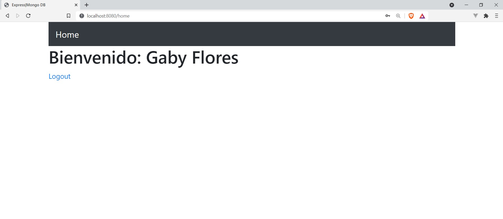
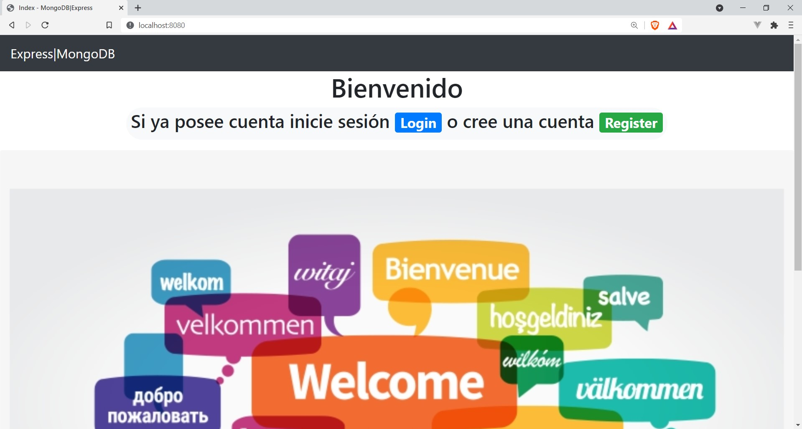 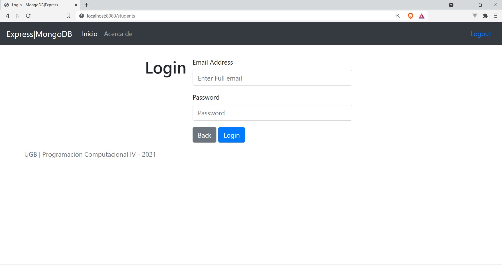
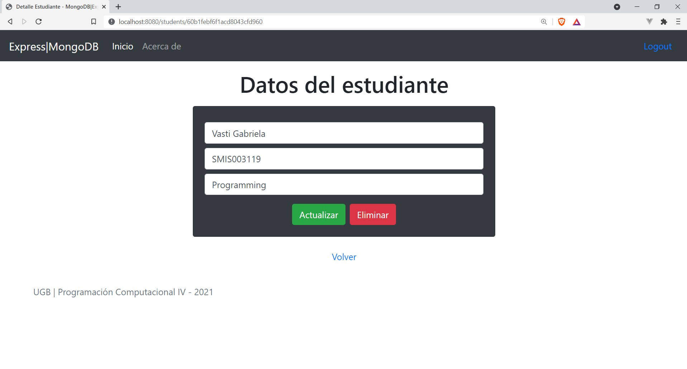 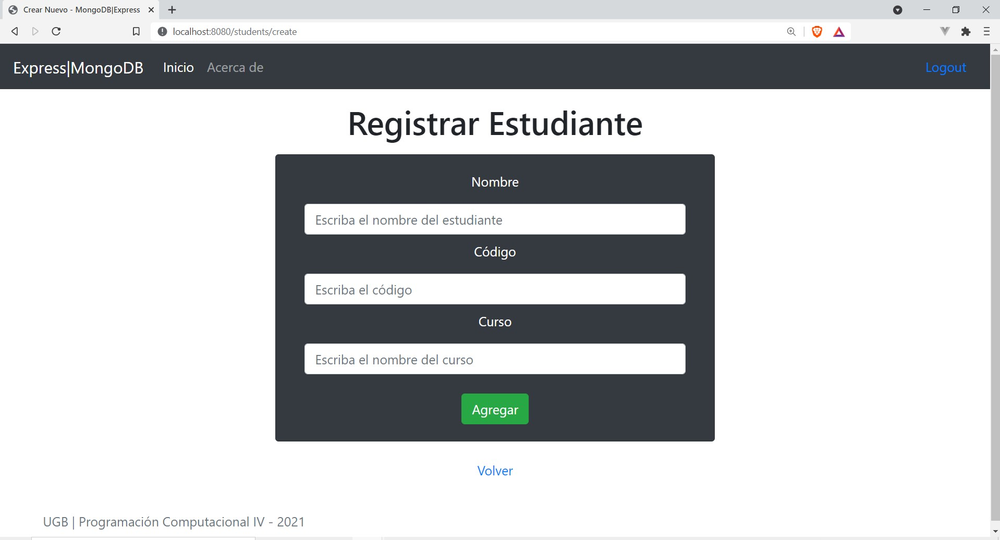
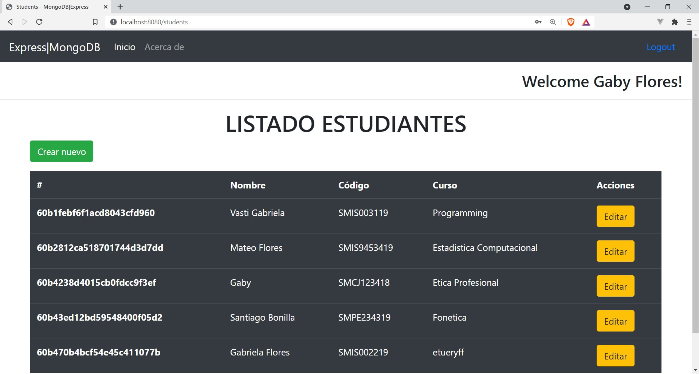
REPOSITORIOS DE GUIAS RESUELTAS
Probando asincronismo con nodejs